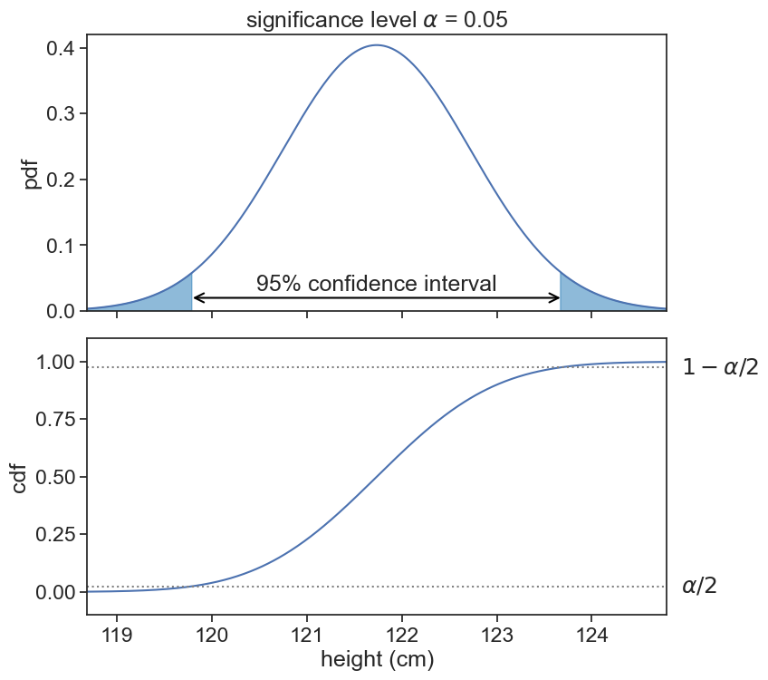

6 analytical confidence interval
We wish to compute the confidence interval for the mean height of 7-year-old boys, for a sample of size N.
We will start our journey with a refresher of the Central Limit Theorem (CLT).
6.1 CLT
The Central Limit Theorem states that the sampling distribution of the sample mean
\bar{X} = \frac{1}{N} \sum_{i=1}^{N} X_i
approaches a normal distribution as the sample size N increases, regardless of the shape of the population distribution. This normal distribution can be expressed as:
\bar{X} \sim N\left(\mu, \frac{\sigma^2}{N}\right),
where \mu and \sigma^2 are the population mean and variance, respectively. When talking about samples, we use \bar{x} and s^2 to denote the sample mean and variance.
Let’s visualize this. The graph below shows how the sample size N affects the sampling distribution of the sample mean \bar{X}. The higher the sample size, the more concentrated the distribution becomes around the population mean \mu. If we take N to be infinity, the sampling distribution of the sample mean becomes a delta function at \mu, and we will know the exact value of the population mean.
plot pdfs as function of sample size
fig, ax = plt.subplots(1,2, figsize=(10, 6), sharex=True, sharey=True)
height_list = np.arange(mu_boys-12, mu_boys+12, 0.01)
N_list = [10, 30, 100]
alpha_list = [0.4, 0.6, 1.0]
colors = plt.cm.hot([0.6, 0.3, 0.1])
N_samples = 1000
np.random.seed(628)
mean_list_10 = []
mean_list_30 = []
mean_list_100 = []
for i in range(N_samples):
mean_list_10.append(np.mean(norm.rvs(size=10, loc=mu_boys, scale=sigma_boys)))
mean_list_30.append(np.mean(norm.rvs(size=30, loc=mu_boys, scale=sigma_boys)))
mean_list_100.append(np.mean(norm.rvs(size=100, loc=mu_boys, scale=sigma_boys)))
alpha = 0.05
# z_alpha_over_two = norm(loc=mu_boys, scale=SE).ppf(1 - alpha / 2)
# z_alpha_over_two = np.round(z_alpha_over_two, 2)
for i,N in enumerate(N_list):
SE = sigma_boys / np.sqrt(N)
ax[0].plot(height_list, norm(loc=mu_boys, scale=SE).pdf(height_list),
color=colors[i], label=f"N={N}")
ax[1].hist(mean_list_10, bins=30, density=True, color=colors[0], label="N=10", align='mid', histtype='step')
ax[1].hist(mean_list_30, bins=30, density=True, color=colors[1], label="N=10", align='mid', histtype='step')
ax[1].hist(mean_list_100, bins=30, density=True, color=colors[2], label="N=10", align='mid', histtype='step')
ax[1].text(0.99, 0.98, "number of samples\n1000", ha='right', va='top', transform=ax[1].transAxes, fontsize=14)
ax[0].legend(frameon=False)
ax[0].set(xlabel="height (cm)",
ylabel="pdf",
title="analytical"
)
ax[1].set(xlabel="height (cm)",
title="numerical"
)
# title that hovers over both subplots
fig.suptitle(f"Distribution of the sample means for 3 different sample sizes");6.2 confidence interval 1
Let’s use now the sample size N=30. The confidence interval for a significance level \alpha=0.05 is the interval that leaves \alpha/2 of the pdf area in each tail of the distribution.
Show the code
fig, ax = plt.subplots(2, 1, figsize=(8, 8), sharex=True)
plt.subplots_adjust(left=0.1, bottom=0.1, right=0.9, top=0.9, wspace=0.0, hspace=0.1)
N = 30
SE = sigma_boys / np.sqrt(N)
h_min = np.round(norm(loc=mu_boys, scale=SE).ppf(0.001), 2)
h_max = np.round(norm(loc=mu_boys, scale=SE).ppf(0.999), 2)
height_list = np.arange(h_min, h_max, 0.01)
alpha = 0.05
z_alpha_over_two_hi = np.round(norm(loc=mu_boys, scale=SE).ppf(1 - alpha / 2), 2)
z_alpha_over_two_lo = np.round(norm(loc=mu_boys, scale=SE).ppf(alpha / 2), 2)
ax[0].plot(height_list, norm(loc=mu_boys, scale=SE).pdf(height_list))
ax[1].plot(height_list, norm(loc=mu_boys, scale=SE).cdf(height_list))
ax[0].fill_between(height_list, norm(loc=mu_boys, scale=SE).pdf(height_list),
where=((height_list > z_alpha_over_two_hi) | (height_list < z_alpha_over_two_lo)),
color='tab:blue', alpha=0.5,
label='rejection region')
ax[0].annotate(f"",
xy=(z_alpha_over_two_hi, 0.02),
xytext=(z_alpha_over_two_lo, 0.02),
arrowprops=dict(arrowstyle="<->", lw=1.5, color='black', shrinkA=0.0, shrinkB=0.0),
)
ax[1].text(h_max+0.15, norm(loc=mu_boys, scale=SE).cdf(z_alpha_over_two_lo), r"$\alpha/2$",
ha="left", va="center")
ax[1].text(h_max+0.15, norm(loc=mu_boys, scale=SE).cdf(z_alpha_over_two_hi), r"$1-\alpha/2$",
ha="left", va="center")
ax[1].axhline(alpha/2, color='gray', linestyle=':')
ax[1].axhline(1-alpha/2, color='gray', linestyle=':')
ax[0].text(mu_boys, 0.03, "95% confidence interval", ha="center")
ax[0].set(ylim=(0, 0.42),
ylabel="pdf",
title=r"significance level $\alpha$ = 0.05",
)
ax[1].set(ylim=(-0.1, 1.1),
xlim=(h_min, h_max),
ylabel="cdf",
xlabel="height (cm)",
);
That’s it. That’s the whole story.
6.3 confidence interval 2
The rest is repackaging the above in a slightly different way. Instead of finding the top and bottom of the confidence interval according to the cdf of a normal distribution of mean \mu and variance \sigma^2/N, we first standardize this distribution to a standard normal distribution Z \sim N(0,1), compute the confidence interval for Z, and then transform it back to the original distribution.
If the distribution of the sample mean \bar{X}
\bar{X} \sim N\left(\mu, \frac{\sigma^2}{N}\right),
then the standardized variable Z is defined as:
Z = \frac{\bar{x} - \mu}{\sigma/\sqrt{N}} \sim N(0,1).
Why is this useful? Because we usually use the same significance level \alpha for all confidence intervals, and we can compute the confidence interval for Z once and use it for all confidence intervals. For Z \sim N(0,1) and \alpha=0.05, the top and bottom of the confidence interval are Z_{\alpha/2}=\pm 1.96. Now we only have to invert the expression above to get the confidence interval for \bar{X}:
X_{1,2} = \mu \pm Z_{\alpha/2} \cdot \frac{\sigma}{\sqrt{N}}.
The very last thing we have to account for is the fact that we don’t know the population statistics \mu and \sigma^2. Instead, we have to use the sample statistics \bar{x} and s^2. Furthermore, we have to use the t-distribution instead of the normal distribution, because we are estimating the population variance from the sample variance. The t-distribution has a shape similar to the normal distribution, but it has heavier tails, which accounts for the additional uncertainty introduced by estimating the population variance. Thus, we replace \mu with \bar{x} and \sigma^2 with s^2, and we use the t-distribution with N-1 degrees of freedom. This gives us the final expression for the confidence interval:
X_{1,2} = \bar{x} \pm t^*_{N-1} \cdot \frac{s}{\sqrt{N}},
where t^*_{N-1} is the critical value from the t-distribution with N-1 degrees of freedom.
6.4 the solution
Let’s say I measured the heights of 30 7-year-old boys, and this is the data I got:
Show the code
Sample mean: 122.60 cm
[114.15972134 128.21581493 122.9864136 117.94247325 132.11013925
118.69131645 123.67695468 112.03152008 121.59853424 114.8629358
121.90458112 115.68839748 127.18043069 118.33193499 125.28525617
124.5287395 120.72706375 113.10575734 132.229147 129.16820684
125.94682095 126.08299475 125.95056303 125.6858065 115.07854075
124.93539918 125.12886271 126.91366971 120.88030405 127.04777082]Using the formula for the confidence interval we get:
Show the code
alpha = 0.05
z_crit = scipy.stats.t.isf(alpha/2, N-1)
CI = z_crit * sample.std(ddof=1) / np.sqrt(N)
CI_low = np.round(sample.mean() - CI, 2)
CI_high = np.round(sample.mean() + CI, 2)
print(f"Sample mean: {np.mean(sample):.2f} cm")
print("The 95% confidence interval is [{}, {}] cm".format(CI_low, CI_high))
print(f"The true population mean is {mu_boys:.2f} cm")Sample mean: 122.60 cm
The 95% confidence interval is [120.54, 124.67] cm
The true population mean is 121.74 cm6.5 a few points to stress
It is worth commenting on a few points:
If we were to sample a great many number of samples of size N=30, and compute the confidence interval for each sample, then approximately 95% of these intervals would contain the true population mean \mu.
It is not true that the probability that the true population mean \mu is in the confidence interval is 95%. The true population mean is either in the interval or not, and it does not have a probability associated with it. The 95% confidence level refers to the long-run frequency of intervals containing the true population mean if we were to repeat the sampling process many times. This is the common frequentist interpretation of confidence intervals.
If you want to talk about confidence interval in the Bayesian framework, then first we would have to assign a prior distribution to the population mean \mu, and then we would compute the posterior distribution of \mu given the data. The credible interval is then the interval that contains 95% of the posterior distribution of \mu.
To sum up the difference between the frequentist and Bayesian interpretations of confidence intervals:
- Frequentist CI: “I am 95% confident in the method” (long-run frequency).
- Bayesian credible interval: “There is a 95% probability that μ lies in this interval” (degree of belief).